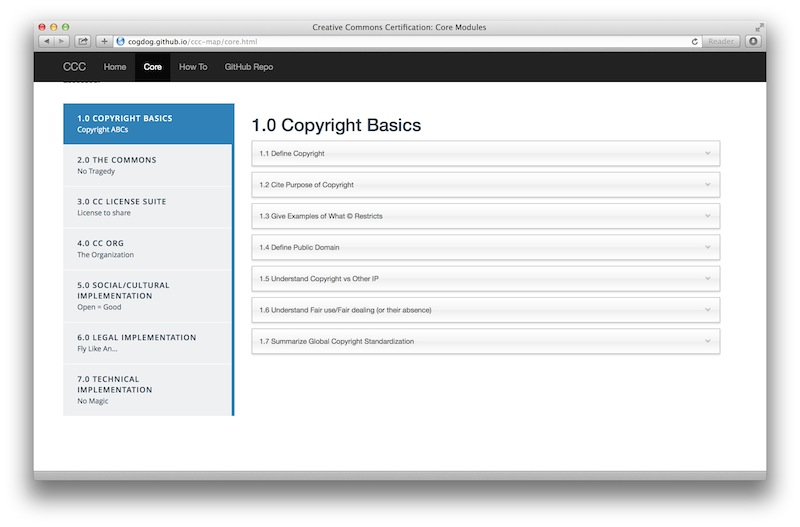
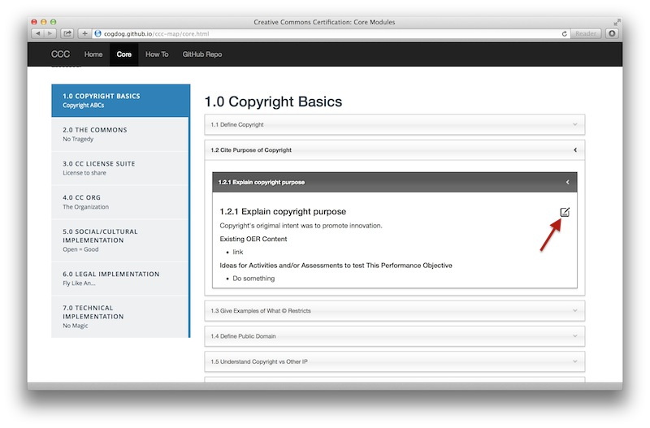
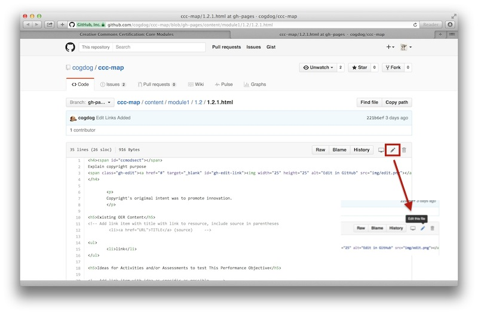
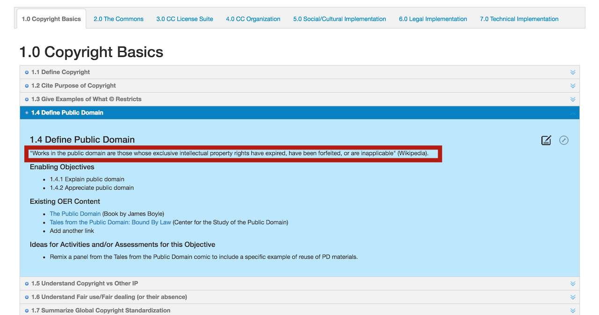

For Project Collaborators (see below for public editing)
You can create one at http://github.com/
...by sending a request as an issue
Clicking the modules on the left tabs will open its set of Performance Objectives:

Clicking any Objective will reveal its list of Enabling Objectives:

Clicking the pencil icon will open the content for this single Enabling Objective in the Github project site.
As viewed in GitHub you will see the HTML code for this objective. Click the pencil/edit icon. Note: If you are asked to "fork" the repository first, this means you have not been added yet as a collaborator from step 2. Please wait or contact us!

Now you should be able to edit the content in HTML. The three parts we ask you to edit are:
When done editing, scroll to the bottom. Use the form field under Commit Changes to provide a brief summary of the change; this helps others get a sense of the updates happening on the site. Then click Commit Changes
Return to the Module Map, and reload in your browser (you might have to hold the SHIFT key when you reload to obtain a fresh copy from the server. And it might take 1-2 minutes to show the changes.

Your updates should be reflected in the Enabling Objective you were editing.
Repeat. and repeat often